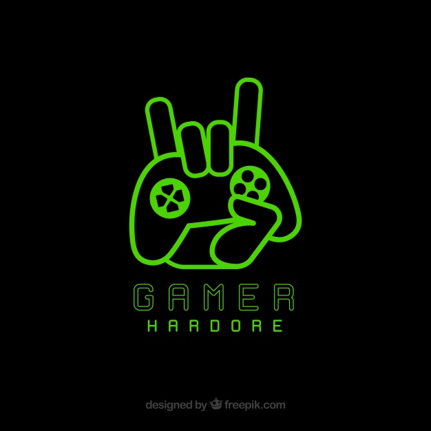

What is a game?
Edited by Heizi onIn my point of view, a game is composed by these elements. They are:
- System;
- Rules;
- Conflict;
- Artificial;
- Quantifiable Outcome
A system says that games are composed of a set of parts that interrelate to form a complex whole. It is the fundamental of game play. Rules provide the structure out of which play emerges and also define the outcome. Rules, in other words, decide the game process. Most games embody a contest of power, and that leads to the competition or intergroup competition, typically: player vs. player, player vs. game system, etc. Game designers have to maintain a boundary between real world and virtual world in both time and space, in order to reduce the effect of game play. Finally, most games will settle a goal for players, and most of the design works for that process, which guides the players to approach similar outcomes. As I quote a summary from Salen and Zimmerman here, 'a game is a system in which players engage in an artificial conflict, defined by rules, that results in a quantifiable outcome'. Of course, games nowadays contain more elements and game developers are trying to add even more. These elements still need time for scholars to do research before they are added to the list.

(GamerLogo, Copied from Freepik)